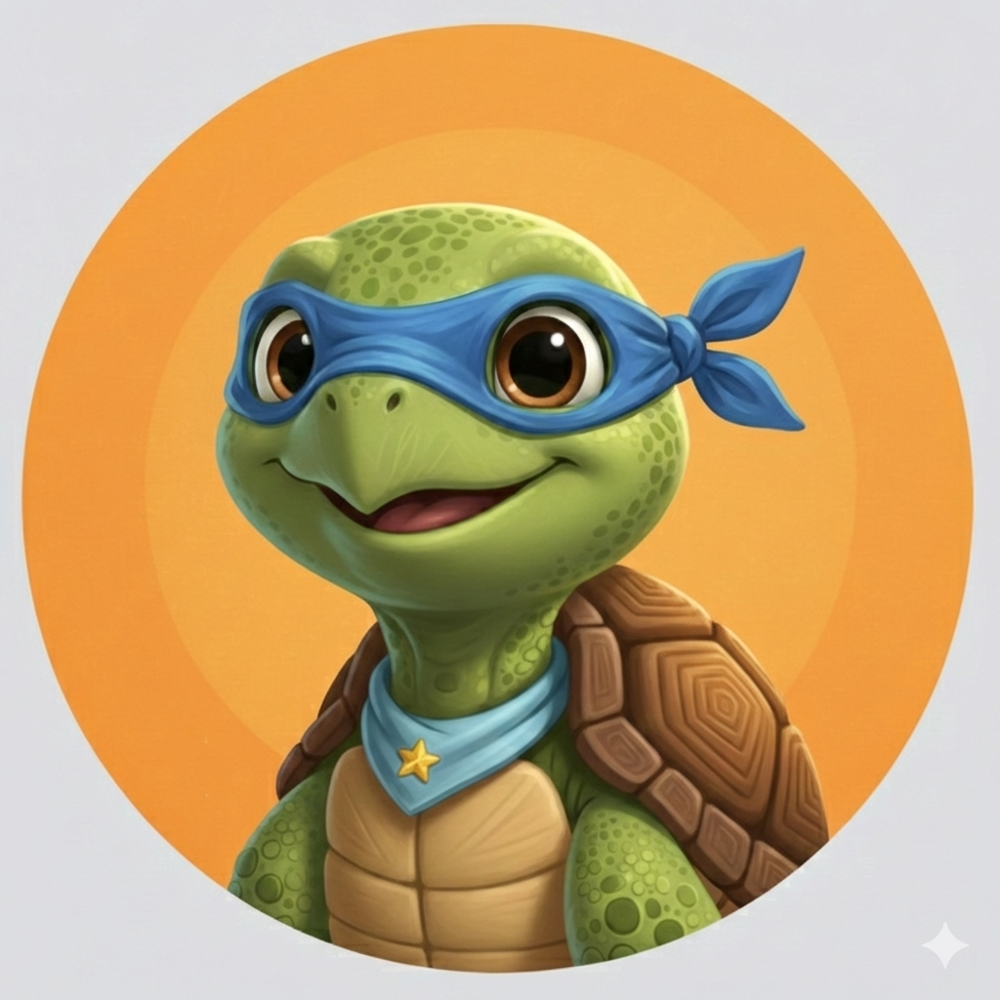
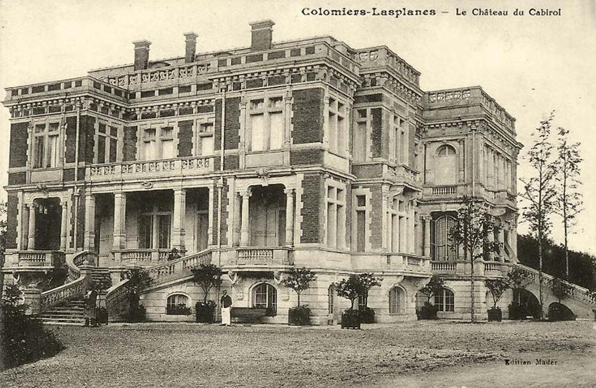

Ce parcours est « mixte » : il alterne des zones naturelles qui peuvent être boueuses selon les saisons, et des zones urbaines où les véhicules circulent ! Prévoyez des chaussures étanches (ou des bottes !) et restez vigilants (et discrets) dans les quartiers résidentiels et au bord des routes.
A faire : à pied, impossible en poussette et PMR ou même en vélo sur une partie du parcours.
Jeanine Oh, bonjour ! Des visiteurs ! Ça fait plaisir. Vous venez pour le parc du Cabirol ? Si ça vous dit, je peux vous faire la visite, et même vous amener à la découverte de l’Armurié ! A mon âge avancé, j’ai plein de choses à raconter, et peu de monde pour m’écouter, à part les poissons de la mare. Mais eux, ils s’en fish…
Jeanine Vous avez devant vous le « pont japonais », pont d’agrément qui est un vestige de l’époque où le château que vous voyez là-haut appartenait à de riches familles toulousaines. Nous sommes ici dans l’ancien parc d’agrément du château où les propriétaires avaient opté pour un type de jardin « anglo-chinois ».
Le pont est trop vétuste et pas assez sécurisé pour permettre la circulation des piétons, et le mettre aux normes de sécurité le dénaturerait totalement. Alors il est fermé à la circulation, mais il agrémente joliment la vue.
Jeanine Allez, assez papoté, suivez-moi, je vais vous montrer l’ancien parc du château.
Jeanine Quelle quiétude ! Le parc fait 8 hectares, soit environ 11 terrains de football. Il abrite bon nombre d’espèces animales ainsi que des arbres classés comme « d'intérêt ». C’est le cas de ce cyprès. Mais je vous parlerai plus en détail de tout ça plus tard car nous aurons l’occasion d’y revenir. Suivez-moi, je vais vous présenter l’Armurié.
Le cyprès qui se trouve devant vous a une particularité bien singulière qui lui vaut d’avoir un adjectif accolé à son nom ? Sur le panneau de présentation, il est dit qu’il est ……. ? Combien de lettres composent cet adjectif ?
Jeanine Ah ! Casso ! Ca fait une éternité que je t’avais pas vu ! Tu niches ici maintenant ?
Casso Ici et ailleurs oui. Ces nichoirs ont beau être de confection humaine, ils sont très agréables. Alors je me suis fait un atelier ici.
Jeanine Et les autres sont aussi ici ?
Casso Saro et Cabia ? Je ne sais pas. S’ils sont là tu les trouveras sûrement dans les autres nichoirs le long de l’Armurié.
Jeanine Ça te dit de venir avec nous ? Je fais faire le tour du propriétaire à des visiteurs ?
Casso Ola ! Non, j’ai trop de travail à finir. Allez-y sans moi !
Jeanine Ok ! A plus.
Jeanine Il est très étrange. C’est un artiste un peu torturé. Il a fait un portrait de moi quand nous étions plus jeunes, mais je ne sais pas quoi en penser… Certes ça me ressemble, mais quelque part ça reste étrange. Vous voulez le voir ?
De nombreux oiseaux ont élu domicile au parc du Cabirol, des oiseaux ordinaires (mésanges, pinsons, rouges-gorges, tourterelles, pies, colverts, poules d’eau) mais on peut également y trouver des hérons cendrés, des martin-pêcheurs (le long de l’Armurié) ou, la nuit, des chouettes hulottes.
Entre le point où vous êtes et le prochain point GPS, comptez le nombre de nichoirs identiques à celui qui se trouve devant vous. Suivez le chemin jusqu’à N 43° 35.910' E 001° 19.973'.
Combien en avez-vous compté (y compris le premier et celui que vous devez voir depuis cette position) ?
Maintenant, quittez la voie principale pour prendre à gauche vers le petit pont métallique en contrebas. Si le chemin est trop boueux vous pouvez rester sur le chemin principal, dans ce cas tournez à gauche à la prochaine intersection.
Jeanine J’aime beaucoup cet endroit. Colomiers compte un patrimoine arboré de 40.000 arbres, dont 20.000 sur le domaine public. Cela signifie qu’il y a, à Colomiers, à peu près un arbre par habitant. Mais, tout comme sa population qui affiche une très grande mixité, de très nombreuses espèces sont présentes. Rien que d’ici, en regardant vers les maisons, vous pouvez apercevoir un chêne, un peuplier, des ifs, un pin parasol et un sapin. Le parc du Cabirol compte aussi un cèdre de l’atlas (atteint de nanisme), ainsi que trois autres arbres d'intérêt que je vous présenterai. On trouve également dans le vieux Colomiers un Séquoia géant.
Sur la couronne du panneau indicateur, vous remarquerez que le Mont-Blanc a une altitude quelque peu incongrue. Relevez les trois chiffres de cette altitude, additionnez-les entre eux et vous obtiendrez un chiffre. Notez le.
Continuez sur le chemin pendant 200m jusqu’à atteindre la route.
Jeanine Nous voici arrivés à l’arrêt de bus de l’Armurier, après avoir longé l’Armurié, et avant que nous n’atteignions le château de l’Armurié. Mais en fait pourquoi ces deux orthographes, et d’ailleurs qui était là en premier de la poule ou de l’œuf ? Est-ce que le château doit son nom au ruisseau ou le ruisseau au château ?
Jeanine Et bien, le nom du ruisseau est lié au Château de l'Armurier qu'il traverse. L'origine du nom remonte au XIVe siècle : le domaine a été fondé par Berthomet de Pradères un fabricant de cottes de mailles qui avait acquis des terres et des bois à cet endroit pour y bâtir une métairie. Le nom s'est transmis au château, au parc, puis au ruisseau qui longe la propriété. Puis l’usage commun a transformé le nom « Armurier » en « Armurié », mais l’orthographe initiale reste toujours valide.
Avant de traverser la route et de poursuivre en direction du château prenez le temps de relever le numéro du bus qui s’arrête. C’est également le numéro d’un département limitrophe de la Haute-Garonne.
Comment s’appelle le département portant ce numéro ? Combien de lettres composent son nom ?
Jeanine Entre une chose et l'autre, je ne vous ai pas parlé de l’Armurié… enfin, du ruisseau je veux dire. Il prend sa source dans la commune de Colomiers, sur le plateau situé à l'ouest de la ville. Long de 3,75km seulement, il se jette dans le Touch entre les communes de Colomiers et Toulouse. Malgré sa petite taille, il est officiellement enregistré dans la base de données du réseau hydrographique français. Et vous savez quoi ? Deux illustres personnalités politiques ont arpenté le même chemin que vous il y a plus de 80 ans. Qui ça ? Soyez un peu patients, je vais vous le dire bientôt.
Le propriétaire d’une des maisons a mis en place une palissade pour le moins incongrue : une fenêtre et une boite aux lettres sont installées vers l’Armurié. Un mot est gravé sur la boite aux lettres.
Dans ce mot quelle est la lettre la plus loin dans l’ordre alphabétique ? Quel est le nombre correspondant à la position de cette lettre dans l’alphabet ?
Jeanine Nous y voilà. Colomiers a été le théâtre d’un événement historique passionnant : en juin 1940, après la défaite française et l’invasion de Paris par les troupes allemandes, le gouvernement se replie à Bordeaux pendant que le Maréchal Pétain met en place la collaboration. Léon Blum est un des chefs de l’opposition. Il fera partie des 80 parlementaires (sur 600) qui voteront non à la remise des pleins pouvoirs au Maréchal Pétain, tout comme son ami Eugène Montel. A ce titre ils sont des opposants politiques majeurs au régime de Vichy. Léon Blum est par ailleurs de confession juive, donc une cible de premier ordre pour les nazis.
Jeanine Afin d’y voir plus clair, Blum décide de se retirer à Colomiers au château de l’Armurié qui appartient à la belle-famille de Vincent Auriol et dont Eugène Montel est le « gestionnaire » local. Ils sont accompagnés de Vincent Auriol (premier Président de la IVème république de 1947 à 1954) et tout trois créent dans le château un « centre de réflexion républicaine ».
Jeanine Bien évidemment leur présence est connue de tous : des Columérins comme du régime de Vichy, et même de Roosevelt, Président des Etats-Unis qui proposera à Léon Blum l’asile pour lui éviter un sort funeste. Léon Blum lui répondra : « On ne quitte pas son pays à l'heure du malheur. Je ne veux pas donner l'exemple d'un chef qui s'enfuit alors que son peuple souffre. »
Prenez le temps de flâner en descendant sur ce chemin de mémoire et profitez de l’installation en place. Parmi toutes les citations, trouvez la réponse à cette question : « Les droits de l’homme ne connaissent pas de … ? ».
Combien de lettres composent ce nom au pluriel ?
Tournez le dos à cette inscription et prenez le petit sentier qui vous fait face. Si vous voyez le panneau « Je le crois parce que je l’espère, etc. », vous êtes allés trop loin. Attention, vous attaquez la partie la plus boueuse du parcours. Soyez prudents.
Jeanine Allez, on ne rigole plus. Fini la balade tranquille on passe en mode camouflage !

Nine-Jea Et voilà, désormais, appelez-moi Nine-Jea la tortue ! Venez, je vais vous raconter la suite de l’histoire.
Nine-Jea Le gouvernement de Vichy, qui se mettait alors en place, surveillait nos trois hommes (surveillance policière discrète au début, puis plus présente). L'idée était de les laisser "en liberté" pour un temps, le temps en fait de préparer les bases juridiques de leur arrestation et du futur procès de Riom. Hitler avait exigé que la France punisse les responsables de la guerre. Il voulait un procès qui prouve que la France avait "attaqué" l'Allemagne sous l'influence de dirigeants "juifs et marxistes". Le temps de la réflexion pour Blum était compté.
Nine-Jea Le 15 septembre 1940 la police arrive au château pour les placer en "détention administrative". L'arrestation n'est pas une surprise, mais Blum a eu 82 jours de répit pour pouvoir préparer sa ligne de défense. Il n’aura l'occasion de s’en servir que 2 ans plus tard, lors du procès de Riom, mais de façon tellement brillante que tous les plans de Vichy tomberont à l'eau.
Nine-Jea Allez, si vous n’avez pas peur, je vais vous montrer un endroit d’où peut-être ils étaient espionnés à l’époque.
Sur votre droite, deux rondins de bois marquent le début d’un passage étroit. Il faudra sûrement vous baisser pour pouvoir passer entre les branches des arbres et les bambous, mais n’hésitez pas à monter jusqu’au point suivant.
Kçor Mais non ! J’y crois pas ! C’est vous ? Vous êtes Léonardo ?? Vous êtes mon héros ! Je vous adore !
Nine-Jea Euh, qu’est-ce qui a Kçor !, T’es tombé sur la tête ou quoi ? Tu me reconnais pas ?
Kçor Vous n’êtes par Léonardo ? La célèbre tortue ninja ?
Nine-Jea Ah, mince… attends.
Jeanine Voilà, c’est mieux comme ça ? La mémoire te revient ?
Kçor (déçu) Jeanine ! Ah : je t’avais pas reconnue ! Qu’est-ce que tu fais ici ?
Jeanine Et toi ? D’habitude tu vis au Bassac ! Tu as fait ta tanière ici ? J’étais en pleine intensité dramatique, et j’avoue que tu as un peu tout stoppé net ! Je racontais à mes visiteurs l’arrestation de 1940. Mais bon, toi t’es trop jeune pour avoir connu ça !
Kçor Et ben raconte moi alors, plutôt que de me le reprocher !
Jeanine Ok, profitons du calme de ce lieu pour que je vous raconte le procès de Riom. C’est un procès politique instruit par le régime de Vichy entre février et avril 1942, visant à désigner les responsables de la défaite militaire française de 1940. L'idée de Vichy était de prouver que les réformes sociales du Front Populaire (comme les 40 heures ou les congés payés) avaient empêché la France de s'armer correctement. L'accusation choisie est celle du "Manquement aux devoirs de leur charge" pour ne pas avoir suffisamment préparé le pays à la guerre. Blum, Daladier, Gamelin et d’autres devaient servir de bouc-émissaires.
Jeanine Très combatifs et brillants orateurs, Léon Blum et Édouard Daladier démontrent que l'impréparation n'était pas politique mais militaire. Ils prouvent que les crédits pour l'armement avaient été votés, mais que c'était le haut commandement (donc Pétain lui-même) qui avait fait de mauvais choix stratégiques.
Jeanine Le procès devient un tel camouflet pour Vichy que Hitler lui-même s'en agace. Le Führer ne voulait pas que l'on discute des causes militaires de la défaite, mais simplement que l'on condamne les responsables politiques. Sous la pression allemande et devant l'échec de l'accusation, le procès est suspendu le 14 avril 1942. Il ne reprendra jamais.
Jeanine Et c’est durant ses 82 jours passés à l’Armurié que Blum a commencé à rédiger ses notes et à structurer les arguments qu'il utilisera lors de ce procès.
Kçor Ca fait froid dans le dos quand même. Bon allez, c’est pas tout, mais j’avais prévu de faire une petite sieste… Ca vous dérange pas de quitter ma tanière ?
Jeanine Ah, ces jeunes ! Plus aucun respect ! C’était mieux avant… quoi qu’à bien y réfléchir… non pas vraiment.
Tournez-vous de façon à entamer la descente (le château est dans votre dos). Sur votre droite se trouve un énorme tronc d’arbre abattu. Sur ce tronc une lettre est vissée. Quelle place occupe-t-elle dans l’alphabet ?
Continuez votre descente, puis arrivés aux deux rondins de bois initiaux, prenez la montée sur votre droite.
Jeanine Nous y voilà ! Le château de l’Armurié. Bon si vous comptiez le visiter, vous allez être déçus. Après avoir appartenu à la belle-famille de Vincent Auriol, puis à la famille et la belle-famille d’Eugène Montel, le château a connu une période de déclin et de relatif abandon à la fin du XXe siècle. Depuis 2014, le bâtiment n'est plus une demeure privée unique ("le château"). Il a été découpé en appartements de standing. On l'appelle désormais la "Résidence de l'Armurié". Les anciennes dépendances (écuries, etc.) ont également été transformées en logements, tout en préservant l'architecture extérieure.
Jeanine Peut-être serait-il temps d’ailleurs que je vous parle d’Eugène Montel, car c’est une personnalité importante de Colomiers, où il est enterré par ailleurs. Instituteur de formation, et journaliste, il est - pour beaucoup de ceux qui connaissent son histoire - un homme politique modèle pour sa bravoure et sa résilience. Emprisonné le 15 septembre 1940, il est libéré en octobre 1942, sa santé s’étant dégradée pendant son emprisonnement. Malgré les menaces qui pesaient sur ses proches et sa famille, malgré les propositions de Pétain de se rallier au Régime de Vichy, il a préféré la prison au reniement de ses principes républicains.
Jeanine Dès le début du mois d'août 1944, alors que les Alliés progressent et que la Résistance s'active, l'administration de Vichy s'effondre. Le maire nommé par Pétain à Colomiers perd toute autorité. Eugène Montel, figure de proue de la Résistance locale et symbole de la légitimité républicaine bafouée en 1940, prend la tête du Comité Local de Libération. Il est élu maire le 20 août 1944 et le restera 22 ans jusqu’à sa mort. Un boulevard et un lycée portent son nom à Colomiers. Des rues portent également son nom à Portet sur Garonne, Tournefeuille, mais aussi Narbonne.
A gauche du portail de la résidence se trouve un panneau commémoratif évoquant la personnalité de Léon Blum. En quelle année est-il décédé ? Ajoutez les 4 chiffres pour former un nombre, puis ajoutez entre eux les 2 chiffres de ce nombre pour ne former plus qu’un chiffre.
Traversez la route (peu passante) au passage piéton jusqu’à N 43° 35.942' E 001° 20.667', restez sur le chemin de droite jusqu’au point suivant.
Jeanine Prenons le temps de nous asseoir. J’en ai fini avec mes souvenirs de la guerre, mais Colomiers est un village bien plus ancien dont les origines remontent au XIème siècle. Le fort central se situait du côté de l’actuelle place Firmin Pons. Au cours du temps des métairies se sont construites aux endroits où il y avait de l’eau et de quoi nourrir les bêtes. C’est une de ces métairies qui a été transformée en château par son propriétaire armurier.
Jeanine Les bancs-fontaines sur lesquels nous sommes assis rappellent ce passé : ils tracent symboliquement l’écoulement de l’eau, rappellent, par l’usage du rouge, la brique de la façade du château et évoquent les anciens lavoirs et les béals (canaux d’irrigation) que l’on trouvait dans les temps anciens.
Jeanine Si vous êtes suffisamment reposés, nous pouvons repartir vers le parc du Cabirol, mais au passage, je vais vous montrer quelques endroits choisis.
Question toute simple avant de partir : combien y a-t-il de « bancs-fontaines » ?
Jeanine Nous y voilà. Regardez cette maison et le parement utilisé pour la façade. C’est un magnifique hommage à ce que l’on nomme ici les « columérines ». C’est un style reconnu officiellement par les architectes de bâtiments de France, assez proche de ce que l’on nomme aussi la « toulousaine », mais avec des différences notables.
Jeanine La structure alterne matériau gratuit : les galets de la Garonne, et le matériau noble et coûteux : la brique foraine. Dans ce type de bâtisse, la brique est utilisée pour les chaînages d'angles (les coins), les encadrements de fenêtres et pour créer des lits horizontaux qui "assoient" les galets. Ce mélange n'est pas qu'esthétique : les galets apportent de l'inertie thermique et la brique permet au mur de "respirer" et de rester stable.
Jeanine Vous noterez que les galets sont posés en "arête de poisson" (opus spicatum) : inclinés à 45°, changeant de sens à chaque rangée pour former des épis. Dans une vraie "columérine" ancienne, cette technique servait à bloquer les galets ronds entre eux. Ici, c'est purement esthétique. L’usage du terme « Columérine » permet en fait de distinguer la ferme de plaine (la Columérine) de la maison de ville (la Toulousaine, qui utilisera plus de brique). Mais les techniques sont identiques.
Jeanine Pendant notre trajet jusqu’au parc, vous verrez une grande quantité de murs de maisons, ou même de murets utilisant cette technique.
Avant de partir, relevez le numéro de la maison en question. Ne conservez que le chiffre des unités.
Jeanine Araucaria araucana ! Ne vous inquiétez pas, ce n’est pas une formule magique ! C’est le nom savant de cet arbre magnifique. Quand je vous disais que Colomiers possédait une très grande biodiversité arboricole ! C’est une espèce originaire de la Cordillère des Andes, entre le Chili et l’Argentine, mais qui s’accommode très bien de notre climat du Sud-Ouest puisqu’il supporte l’humidité et le froid tempéré.
Jeanine Si son nom ne vous dit rien, c’est parce qu’il n’est pas facile à retenir, mais également parce qu’on l’appelle plus couramment « le désespoir des singes » car ses feuilles sont tellement piquantes et imbriquées qu'il est impossible pour un animal de grimper le long du tronc ou des branches sans se blesser.
Jeanine C'est un véritable « fossile vivant » puisqu’il peut vivre plus de 1 000 ans. Il grandit très lentement, surtout durant ses premières années, ce qui veut dire que celui-ci est là depuis déjà bien longtemps. Il produit de gros cônes contenant des pignons comestibles très appréciés par les peuples Mapuches au Chili.
On peut déterminer approximativement l’âge d’un Auracaria araucana en fonction de sa silhouette. Le spécimen devant vous a-t-il plutôt :
Prenez le petit chemin qui vous mènera jusqu’au passage clouté à N 43° 35.791' E 001° 20.388'.
Traversez, prenez à droite jusqu’au rond-point. Restez toujours sur le même trottoir jusqu’au point N 43° 35.847' E 001° 20.372'.
Attention il n’y a pas ici de passage piéton, traversez avec la plus grande prudence pour vous rendre ici : N 43° 35.861' E 001° 20.337'
A partir de ce point, vous êtes en sécurité continuez 200m sur l’allée jusqu’au point suivant.
13. Est-ce en forgeant que l’on devient Guy Forget ?
Jeanine Nous sommes presque de retour au parc, mais arrêtons-nous d’abord ici, il y a deux choses que je voudrais vous dire. D’abord, c’est ici que s’entraîne l’équipe de tennis de Colomiers. Depuis plus de 20 ans, le club évolue presque sans interruption entre la Pro A et la Pro B (les deux plus hautes divisions nationales), ce qui est exceptionnel pour une ville de cette taille.
Jeanine Mais le club a aussi connu quelques moments de gloire. D’abord entre 1991 et 1992 quand Guy Forget (Ancien n°4 mondial et capitaine de l'équipe de France) est venu porter le maillot de l’US Colomiers juste après sa victoire en Coupe Davis. Mais également quand Richard Gasquet a fait partie de l'équipe de Colomiers lors des championnats de France par équipes (Interclubs). Le 7 décembre 2014 Colomiers a battu le TC Paris par 4 à 2 et Colomiers est devenu champion de France de Tennis pour la première fois de son histoire. Pas mal non ?
Jeanine Et maintenant, profitez également du patio. Il est composé essentiellement de plantes « xérophiles », c’est-à-dire qui consomment peu d’eau. La grosse plante aux feuilles très épaisse qui ressemble à un cactus (sans en être un), c’est une agave. Très utile en cas de coup de soleil, ainsi que pour produire de la téquila (à condition que ce soit une agave bleue, ce qui n’est pas le cas de celle-là). Vous pouvez remarquer aussi un phornium de Nouvelle Zélande et un laurier rose.
Un mot est inscrit sur la porte d’entrée du Tennis Club. Quelle est la première lettre de ce mot ? Quelle est sa place dans l’alphabet ?
Notez ce chiffre qui vaut L :
Ressortez maintenant du patio et dirigez-vous vers le parc du Cabirol. Descendez en direction du point suivant vous pouvez suivre le chemin ou couper à travers l’aire de jeu, à votre guise.
Jeanine Regardez-le celui-là, toujours ici. C’est un des rares arbres du parc qui soit plus âgés que moi. La longévité des tortues est célèbre, mais comme nous l’avons vu certains arbres peuvent vivre plus de 1.000 ans. Celui-ci à entre 100 et 150 ans. C’est un chêne d’Amérique. Il a la particularité de s’imposer aux autres chênes. En quelques décennies, il dépasse les espèces locales en hauteur, captant ainsi toute la lumière du soleil. Les jeunes chênes indigènes, restés dans l'ombre, finissent par dépérir.
Jeanine Introduit en France au XVIIIe siècle pour l'ornement puis pour le reboisement, il se comporte un peu comme un "invité qui prend toute la place" au détriment de nos espèces locales. Aujourd'hui, il est classé comme espèce exotique envahissante dans plusieurs régions de France. Mais à Colomiers, il est surveillé de près et bénéficie d'un traitement de faveur en tant que spécimen historique.
Approchez vous du chêne et touchez son écorce, comment est-elle ?
Descendez jusqu’au point N 43° 35.874' E 001° 19.910' et prenez à gauche la « ligne de désir ». C’est ainsi que les architectes nomment ces chemins non prévus initialement et créés par le passage fréquent des promeneurs. De là poursuivez jusqu’au point suivant. Attention à la boue.
Jeanine Et voici maintenant mon ami le plus étonnant : Gingko Biloba ! Il est originaire de Chine, et son espèce est sur terre depuis plus de 250 millions d’années ! C’est-à-dire qu’il a connu l’âge où les dinosaures vivaient sur terre. C’est le dernier représentant de son groupe botanique : les Ginkgophyta. On l’a longtemps cru éteint à l’état sauvage. Il a survécu grâce à la culture humaine.
Jeanine Il possède des qualités exceptionnelles de résistance aux maladies et aux insectes, de longévité (certains spécimens vivent plus de 1.000 ans) et il a une tolérance très grande à la pollution, au froid et au chaud. Il a aussi une capacité très développée à repousser après des traumatismes extrêmes : plusieurs gingkos ont repoussé dès 1945 à Hiroshima à proximité de l’explosion nucléaire.
Jeanine Et puis, ses feuilles contiennent énormément de propriétés : antioxydant puissant (lutte contre le vieillissement cutané), stimulation de la microcirculation, protecteur vasculaire (pour les peaux sujettes aux rougeurs) et apaisant. Il est de ce fait très utilisé dans l’industrie cosmétique, et c’est grâce à lui que je suis toujours aussi fraiche à mon âge !
Vous l’aurez compris, cet arbre est de très grande valeur, mais combien d’écu vaut-il réellement ? (la réponse est sur le panonceau). Ne conservez que le chiffre des unités.
Sortez du parc par le portillon, N 43° 35.879' E 001° 19.809' traversez la route au passage clouté et arrêtez-vous au point suivant.
Jeanine De là où vous êtes, vous apercevez maintenant très bien le château du Cabirol. Le bâtiment que vous voyez aujourd'hui, devenu une clinique de soins de suite et de réadaptation, est une demeure dont les racines remontent au XVIIIe et XIXe siècles. À l'origine, le domaine était une vaste exploitation agricole et viticole appartenant à de riches familles toulousaines qui y installaient leur "maison de campagne" (les fameuses follies ou châteaux de plaine).
Jeanine Le château actuel présente un style typique du néo-classique languedocien avec ses briques rouges apparentes. Il a appartenu à des propriétaires privés (notamment la famille de gantiers toulousains Gantous au début du XXe siècle) avant sa transformation.
Jeanine Voilà une photo du château prise entre 1900 et 1910.

Jeanine Le nom "Cabirol" quant à lui est profondément ancré dans la langue occitane. Il signifie "chevreuil" ou "cabri". Avant l'urbanisation, ce secteur de Colomiers était une zone boisée où l'on croisait fréquemment ces animaux. C’est également un nom de famille assez répandu dans le Sud-Ouest.
Jeanine Et bien, je crois que c’est le moment des adieux ! Je vous remercie de votre si charmante compagnie. Quand j’étais petite et que je rendais visite à ma grand-mère, elle m’offrait toujours un petit quelque chose avant que je ne parte, alors je vais faire pareil. J’ai un petit trésor caché tout près d’ici. Il est gardé par mon ami le grand chêne vert. Allez le trouver de ma part, et contre une dernière énigme, il vous révèlera l’emplacement exact.
Trouvez le chêne vert, dernier arbre d’intérêt du parc, il vous révèlera son vrai nom, ce qui vous permettra de vérifier vos réponses et d’accéder à la cache.
Tapez ici les 7 lettres magiques qui précèdent le mot « ilex » :
Tableau récapitulatif des indices
N 43° (G-D)(B+K) . ((C*J)-L)(H)'
E 1° (M)(A+B) . ((E*I)+F)(N)'
BRAVO ! La cache se trouve aux coordonnées suivantes :
Si vous n’êtes pas familier du « géocaching » voici ce qu’il vous faut faire maintenant :
1) Vous rendre aux coordonnées GPS indiquées (soyez discrets pour ne pas révéler la cache à des personnes moins bien intentionnées que vous).
2) Trouver le contenant (il est en plastique transparent, hermétique, et mesure à peu près 20 cm de haut). Attention, c'est la pointe du pointeur qui sert à déterminer la position sur Google Maps, pas le cercle !
3) Si vous le souhaitez, signer le « logbook » et indiquer la date de votre passage.
4) Si vous le souhaitez, prendre un des objets se trouvant dans le contenant. Pensez aux autres, n'en prenez qu'un par personne. Merci.
5) Redissimuler le contenant exactement à l’endroit où vous l’avez trouvé, en veillant à le refermer hermétiquement,
de manière à ce que d’autres puissent le trouver.
Si le contenant a besoin d’être enlevé, quelle qu’en soit la raison, merci de contacter le propriétaire à l’adresse suivante : kingluther@free.fr